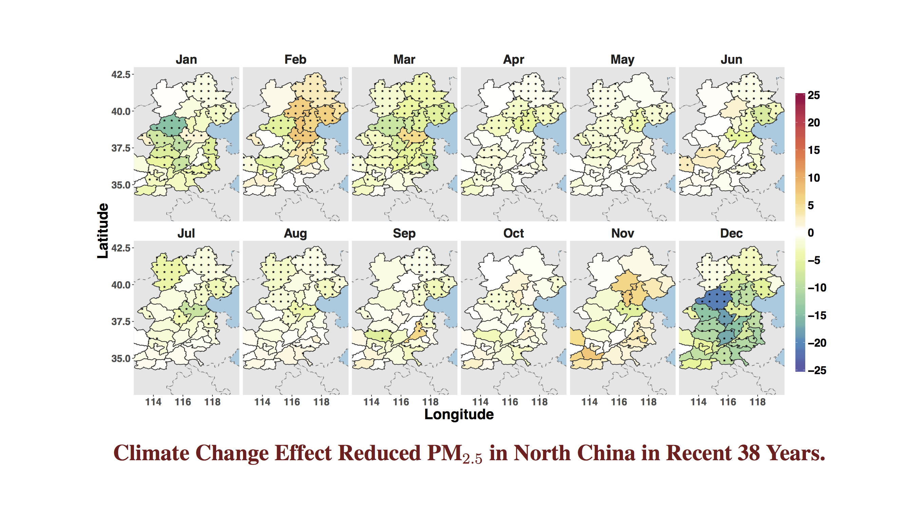
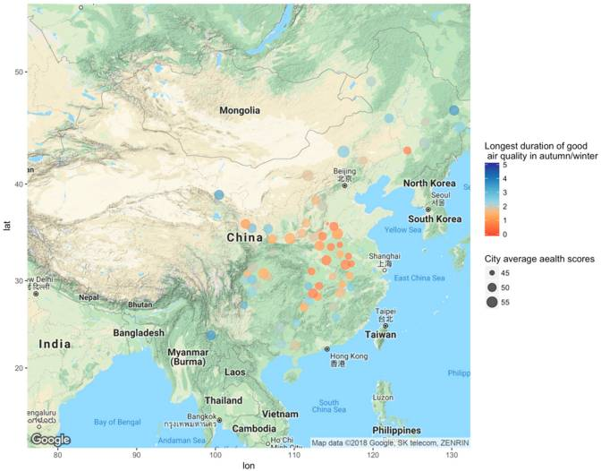
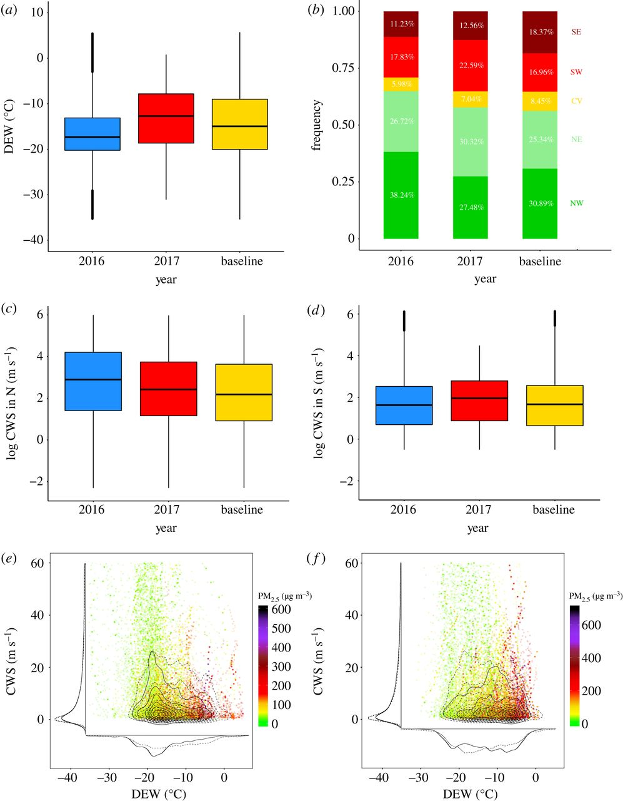

-
Climate Change and Impacts on Air Pollution -- Results from North China
- North China has been experiencing severe air pollution and there are suspicions that the problem was the acts of climate change in general and a decreasing northerly wind in particular. We take a retrospective approach to analyze 38 years (1979-2016) historic climate data from European Centre for Medium-Range Weather Forecasts (ECMWF) in conjunction with ground level PM2.5 in 32 cities to quantify effects of the climate variables on the concentration of PM2.5. The study has detected statistically significant changes in the surface temperature, relative humidity and boundary layer structures and integrated vertical wind profiles in the region over the 38 years span. It is found that these changes have actually led to reduced PM2.5 in most cases. Hence, the climate change has not aggravated the air pollution situation in North China. 
Health Effects of Air Pollution in China
- Rapid economic and social development in China has resulted in severe air pollution and consequent adverse impacts on society. The health effects of air pollution have been widely studied. Using information from the China Health and Retirement Longitudinal Study (CHARLS) database, we established a hierarchical linear model combining pollution and socioeconomic and psychosocial variables to examine the effects of air pollution on public health in China. Local air pollution was characterized in multiple dimensions.
- The relationship of health to its determinants greatly differed between Eastern and Central/Western China. Higher education, higher income level, better life satisfaction, and long-term marriage were significantly associated with better health status among Chinese. In addition, regional healthcare resources were positively associated with the health of residents. As indicated by the hierarchical model with health as dependent variable, in Central/Western China, longest duration of good air quality in spring/summer was positively associated with health (estimated coefficient = 0.067, standard error = 0.026), while the mean Air Quality Index (AQI) in autumn/winter was inversely associated with health (estimated coefficient = −0.082, standard error = 0.031). Good air quality in the current study is defined as daily average AQI less than 35.
- Duration (in days) of acceptable air quality was particularly important for improving public health. Future policies should target increased duration of good air quality while managing air pollution by controlling or decreasing severe air pollution. Liu W, Xu Z, Yang T. Health Effects of Air Pollution in China. International Journal of Environmental Research and Public Health. 2018;15(7):1471. doi:10.3390/ijerph15071471. 
- Int J Environ Res Public Health Read it
Cautionary tales on air-quality improvement in Beijing
- The official air-quality statistic reported that Beijing had a 9.9% decline in the annual concentration of PM2.5 in 2016. While this statistic offered some relief for the inhabitants of the capital, we present several analyses based on Beijing's PM2.5 data of the past 4 years at 36 monitoring sites along with meteorological data of the past 7 years.
- The analyses reveal the air pollution situation in 2016 was not as rosy as the 9.9% decline would convey, and improvement if any was rather uncertain. The paper also provides an assessment on the city's PM2.5 situation in the past 4 years. 
- (a–d) Distributions of three key meteorological variables in January and February of 2016, 2017 and the 7 years’ baseline from 2011 to 2017. (a) DEW. (b) Percentages of WD in 2016 and 2017 and also under the 7 years’ baseline. WD are combined into five categories (from bottom up): northwest (NW), northeast (NE), calm and variable (CV), southwest (SW) and southeast (SE). (c,d) Log CWS in north (c) and south (d) WD. (e,f) Contour plots of the joint distribution of CWS and DEW in 2016 (e) and 2017 (f). The colour of the dots reflects the PM2.5 concentration at the time of the observation. Zhang, S., Guo, B., Dong, A., He, J., Xu, Z., & Chen, S. X. (2017). Cautionary tales on air-quality improvement in Beijing. Proc. R. Soc. A, 473(2205), 20170457.
- Royal Society Read it